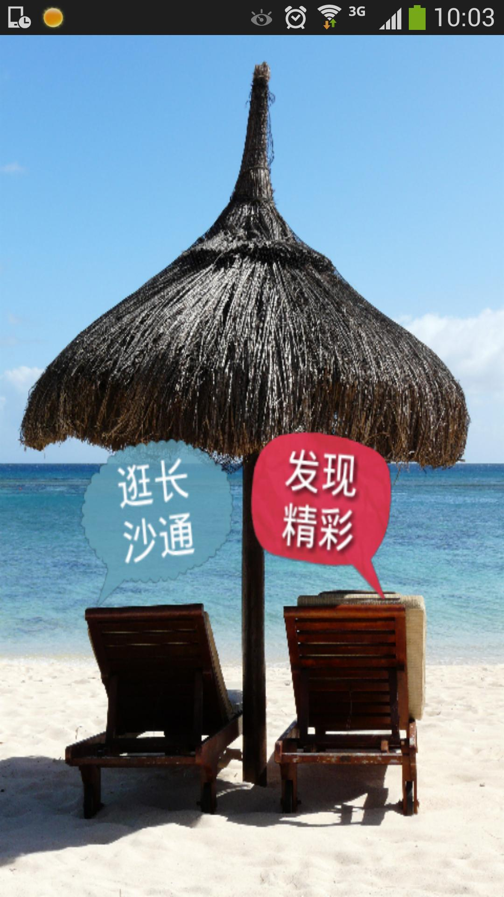
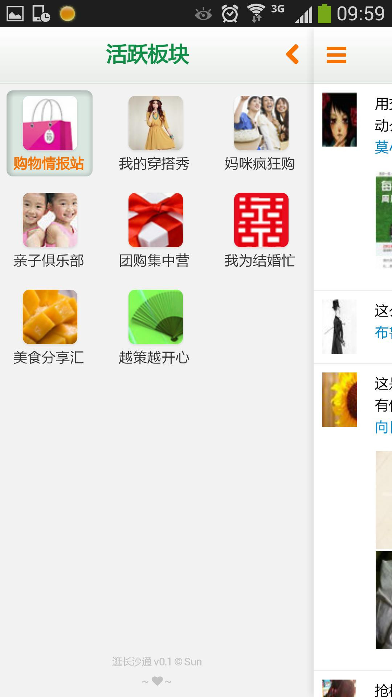

简介
话说Tina非常喜欢刷长沙通, 每天就是盯着有什么帖子更新了啊.
但苦于只有网站, 没有手机App, 而手机上打开网站效果又不是很理想, 看起来有点不方便(白花花的流量啊).
有一天Tina抱怨说, 为什么长沙通不出手机App啊, 我想在手机上逛长沙通!
在网上搜索了一番后, 还真没发现有长沙通手机App.
做为新时代的手工艺人, 那就动手做一个呗, 当是给Tina的玩具.
手艺不好, 请大家多多包涵:), 感谢长沙通提供的高质量内容, 如有不妥请联系我.
版本
v0.1 2013-12-21(开发周期2013-12-19 ~ 2013-12-21)
功能测试版, 定下UI和功能模块, 仅实现了最迫切的东西, 因此有所缺陷, 使用上也有些卡顿(HTML5开发, 没有优化-_-")
为了节约流量, 每个论坛板块只能看前10个帖子, 每个帖子只能看前11条跟帖(包含楼主), 还不能翻页啊...亲
只是希望尽早赶出一个可用的版本, 其他神马都是浮云了.